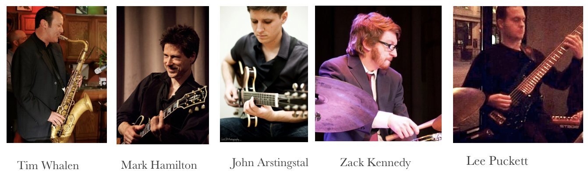

Information
Check out our SoundCloud page.
The Lee Puckett Group is a Jazz Quartet based in Louisville Ky.
Song selections are based in the Jazz tradition, including standards, post-Bop, 70's Jazz-Fusion.
Special attention is placed on song arragments with the intention making the music sound fresh.
With Tim Whalen(sax), Mark Hamilton (guitar), John Arstingstal (guitar), and Zack Kennedy (drums),
the group creates a melodic and dynamic environment to take the listener on a musical journey.
The Lee Puckett Group is available for concerts, recording, club dates, and private events.

Copyright © LeePuckettGroup